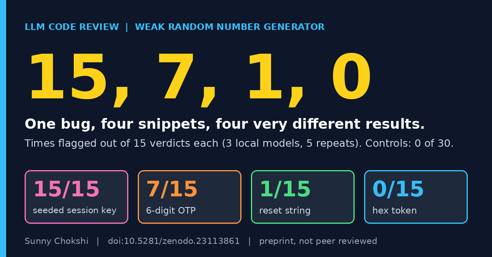

LLM weak random number generator detection test
Sunny Chokshi. November 2, 2026.

I ran an LLM weak random number generator detection test on four Python snippets that make the same mistake. Each one builds a value an attacker must not be able to guess, using the random module instead of a cryptographic source. Three local code models read each snippet 15 times between them. One snippet was flagged 15 times, one 7 times, one once and one never. This post shows the four snippets and what the spread tells me about how these models review code.
Read the preprint on ZenodoDownload the data (CryptoBench, Zenodo)
Download the data: the dataset holds every snippet and every recorded verdict, and its snippets, harness and results are byte-identical to the v1.0.0 the preprint cites, so you can recount the numbers below.
The four snippets
All four are in the weak PRNG class of CryptoBench, which I mapped to CWE-338. Each does a different job with the random module. These are excerpts, without the imports and function wrappers.
pr_seed random.seed(time.time()); return random.getrandbits(128)
pr_otp return random.randint(100000, 999999)
pr_reset return "".join(random.choices(string.ascii_letters, k=32))
pr_token return "".join(random.choice("0123456789abcdef") for _ in range(n))The class also has two secure controls that do the same kinds of jobs with the secrets module, a token and a reset string. In Python, random vs secrets is the choice the controls get right.
LLM weak random number generator detection, snippet by snippet
I pooled the three models in my study that separate safe code from unsafe code: qwen2.5-coder 7B, qwen2.5-coder 14B and deepseek-coder 6.7B. Each model saw each snippet five times, so every snippet has 15 verdicts. The five repeats of one snippet are not five independent examples.
pr_seed 15 of 15 flagged
pr_otp 7 of 15
pr_reset 1 of 15
pr_token 0 of 15
controls 0 of 30Pooled, that is 23 of 60, or 38%. The two secure controls were never flagged. So this class has a low detection rate and no false alarms.
What I think the spread means
Only one of the four, random.seed(time.time()), calls a seed function with the clock. The other three use randint, choices and choice, which look like ordinary calls to me. The OTP, the reset string and the hex token all need an unpredictable value, and the models flagged them 7, 1 and 0 times out of 15. I cannot say why the OTP did better than the reset string.
My reading is that the models respond to a name they have seen labelled as dangerous more than to the job the value does. That is a hypothesis. I have not tested it, and the preprint says so too.
Size did not fix it in my data. Across the four snippets, qwen 7B flagged 6 of 20 trials and qwen 14B flagged 11 of 20. That difference is not statistically significant (Fisher exact test, p = 0.20), and 20 trials per model cannot rule out a modest gain.
Limits
The class has four vulnerable snippets, I wrote them, and they are short single-file Python. The models are local, quantized and run at Ollama defaults with one fixed prompt, and the score is the verdict only. The paper expects that a short linter rule for the random module near token code would do better than the model here, but I have not tested that. The paper is a preprint and it is not peer reviewed.
Read and cite
Preprint on Zenodo (doi:10.5281/zenodo.23113861) · Paper listing on my site · CryptoBench dataset (doi:10.5281/zenodo.23067051)
Earlier post in the same line: CryptoBench: 54 snippets to test LLM crypto misuse detection.
Cite as: Chokshi, S. (2026). Known-Bad Names, Unknown-Bad Uses: What Local Code Models Detect When They Review Cryptographic API Misuse [Preprint]. Zenodo. https://doi.org/10.5281/zenodo.23113861
Dataset: Chokshi, S. (2026). CryptoBench: A benchmark of cryptographic API misuse for evaluating LLM code reviewers [Dataset]. Zenodo. https://doi.org/10.5281/zenodo.23067051
Sunny Chokshi, PhD student, Information Technology, University of the Cumberlands. Research: adversarial robustness of LLMs in cybersecurity. ORCID · GitHub